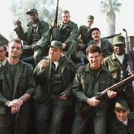

As every man over the age of 18 knows, registration with the Selective Service System is mandated by Federal law for men only. The consequences for not doing so are dire, and have been well-covered here at ROK. Registering with Selective Service puts young men’s names in a database to be used in the event of war, requiring those men to be involuntarily drafted into military service.
A Volunteer Military

The draft in America ended with the Vietnam war, and we have had a volunteer military ever since. Our military, in the 40-plus years since the draft ended, has been involved in conflicts all over the world, with no need to reinstate the draft. In that time, millions of young men, including myself and most of you reading this, have registered and are essentially ready to be pulled into war at the President’s request and Congress’ approval.
But that hasn’t been required, despite the first and second war in Iraq and the war in Afghanistan, the longest war in U.S history. Our volunteer military, according to the Department of Defense’s 2017 fiscal year budget proposal, is over 2 million people strong, suggesting that military service is a relatively safe and rewarding career choice for many people, both men and women.
I never visit feminist websites, and I’m not too familiar with their main issues, besides “gender equality” (except when it comes to fighting for men’s rights). So, I searched out and visited some sites and even searched what their main issues are. I got stumped. They don’t even know what they’re fighting for.
I was finally able to condense their fight down to a few main issues: gender equality, equal pay, eliminating “rape culture,” and a woman’s body is her’s to do with as she chooses (weight, abortion, clothing, etc). There are more, but these seem to be some of the major issues.
Feminists have the freedom to fight for these causes because they live in a country with a government guided by a sacred document called the Constitution, and the tenets of that document are preserved and protected by our military. If a foreign invader successfully defeats our military, we lose our Constitution and the rights afforded by it.
I can’t think of a better cause, or of a better way for feminists to truly and honestly fight for gender equality, than for them to organize and march on the President and Congress, demanding to be included in the mandatory registration process of Selective Service. Then they can join the ranks of every 18 year old man and register to potentially be conscripted into military service and potentially die for their country in combat.
If women were to ever get drafted, as unlikely as this is, they would be drafted right alongside men, theoretically. I don’t believe this would actually happen for combat positions, however. I believe, right or wrong, that women would be drafted into support positions and men would be placed into combat roles. Maybe I’m wrong. Whether women would be better or worse in combat will be covered later.
What is true is that women would have an easier time with the physical requirements of basic training. They are not required to perform as many push-ups and their minimum run times are extended. Why? Well, all four major branches of the military believe they are the weaker sex. See the charts for the minimum fitness requirements.
The Army thinks women are weaker and slower
Physical demands aren’t the only thing easier for women. How about something more basic, like hair? Women have it better there, too. You might think hair is no big deal, but to an 18 year old, hair is a very big deal, even to a man.
Belieb it, his hair is important
It took him over an hour to get this Styles
Now take a look at some male and female Marines in recruit training (boot camp).
Shaved to stubble, without exception

They get to keep their hair
So, when the women get down time, they can literally let their hair down and look like women. A man with a shaved head, these days, looks he might be something other than military. This is yet another example of unequal but better treatment for women in the military.
What about the pay? Good news, ladies, pay is based on rank. An E-5 sergeant makes the same, regardless of genitalia.
I can already hear the argument about the push-ups: men are stronger, so they should have to do more. Men run faster, so they should have quicker times. Okay, but women have smaller bodies, so aren’t they proportionally equivalent? Watch this 17 year old girl:
So, is the military being sexist and non gender equivalent by lowering the physical fitness standards for women? Since there are hundreds of thousands of women in the military, maybe they can take on that battle. When they have time.
What about combat? Another well-known fact with women about to be deployed is the increase in pregnancies. But I’m sure there are plenty of women willing to die for their country if given the opportunity. I, for one, would not want to fight next to someone who was allowed entry on reduced physical standards. At least not in infantry. Just like I wouldn’t want to be rescued by a female fireman who was quota’d in like they do in Australia. Aircraft, however, is another story.
Some studies have suggested that women make better fighter pilots because they have better hand-eye coordination, faster reflexes, and can handle G-forces better because of their smaller frames. That may be true. Actually, it makes sense to me, and I have no reason to disbelieve any of those claims. I’ve also heard that women don’t have the same “kill instinct” that men have and that they hesitate a split-second longer than men do, especially in instances when there is a possibility of civilian involvement or friendly fire. I believe these statements, also. I have never flown in combat, but I have known fighter pilots, none of whom have flown with women. Maybe someday those truths will reveal themselves.
Feminists, Fight For The Draft Or STFU
Do I want 18 year old women in combat? No. I also don’t want 18 year old men in combat. But, as mentioned above, we have a volunteer military, and these women would likely just remain on a list until they were too old to be drafted, if a draft were to ever happen. We have plenty of volunteers, and we’ve had plenty of volunteers for over 40 years. So, this is a safe, but meaningful, fight for the feminists to attempt.
If they made their voice loud enough, they could win this fight, too. They’ve already turned consensual drunken sex into rape. They’ve also gotten the media and the rest of the liberals convinced that they only make 76 cents (or 74, 77, 78) for every dollar men make for doing the exact same job.
So why not fight for the best example of gender equality possible? If they ever do, and they fight hard enough to win, I will become a feminist. A proud, flag-waving feminist. However, I am confident beyond measure that this will never happen, because I will always believe that feminists will never fight for true equality in anything.
Read More: US Government Goes Full Retard And Backs War Draft For Women